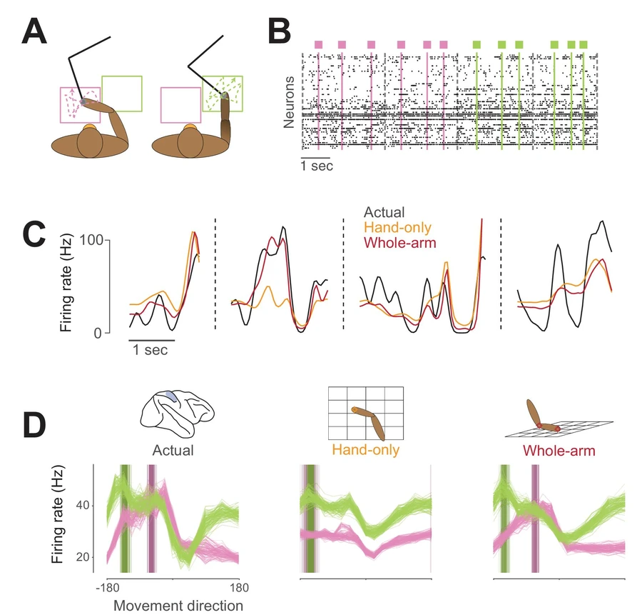
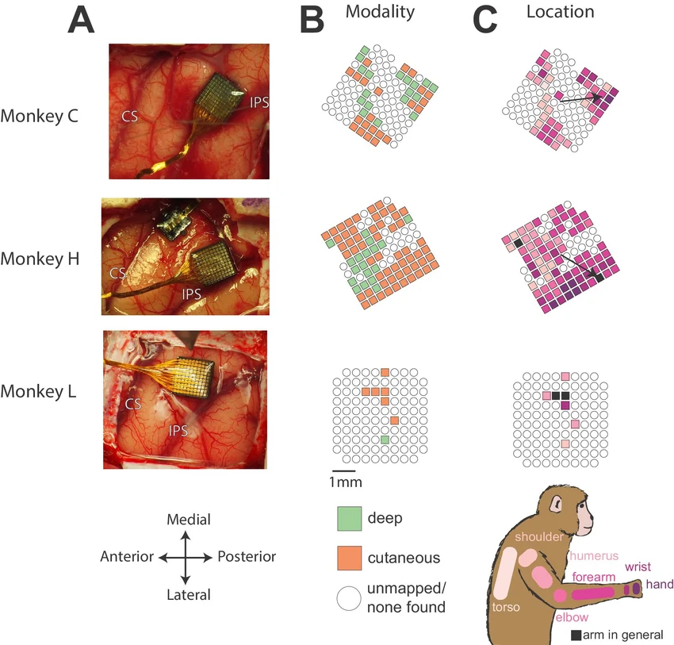

Optical markers
XYZ · metres
HandElbow marker
Drag or use the arrow keys to turn the shoulder-relative axes. A dotted line joins the two marker sites.
A macaque moved a handle through two workspaces. What could the preceding 200 milliseconds tell us about the next stretch of that reach, and the spikes that followed in sensory cortex?
Drag or use the arrow keys to turn the shoulder-relative axes. A dotted line joins the two marker sites.
The encoders record motion in the apparatus plane. This plot has its own origin and scale.
| Measured site | X | Y | Z |
|---|
Each square is one 10 ms bin for a sorted unit on an electrode. Select a row to inspect the recorded counts and the model’s expectation.
| Later bin | Observed | Past + forecast motion | Past alone |
|---|
Adding the predicted movement failed to improve later spike-count forecasts over the same earlier measurements alone. On later trials in workspace 1, the change in count error was +0.0035 (95% interval −0.0232 to +0.0277, 113 windows from 42 original trials). On transfer to workspace 2, it rose by +0.0100 (+0.0011 to +0.0185, 822 windows from 315 trials).
Error is Poisson deviance per sorted unit for the 100 ms total. Lower is better. The intervals resample chronological blocks of eight original trials. These are cohort results from the primary comparison. Read the full comparisons and controls.
Each 3D file plays 30 recorded samples. The marker and encoder files open separately in a glTF viewer.
Chowdhury, Glaser and Miller tracked painted arm landmarks with a depth camera while the macaque moved a robot handle towards successive visual targets. The two plotted landmarks are Marker_1 on the hand and Pronation_Pt1 on the proximal ulna near the elbow. The encoders measured the handle independently. A cortical array recorded spikes that the experimenters sorted offline.



Each clip was fixed as the first candidate in its split by controller timing before inspecting movement or spike counts. All clips come from the same macaque on the same day. The original authors released the recordings under CC0 and these three figures under CC BY 4.0. The samples share a processed 10 ms clock. Filtering, optical interpolation and offline sorting limit what this replay can say about real-time sensing. Movement precedes the later counts here. That ordering alone cannot tell us which movements caused which spikes.
Data on Dryad ↗Original paper ↗Methods & rightsOffline instructions